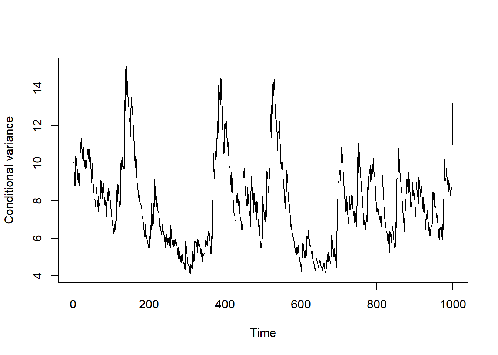
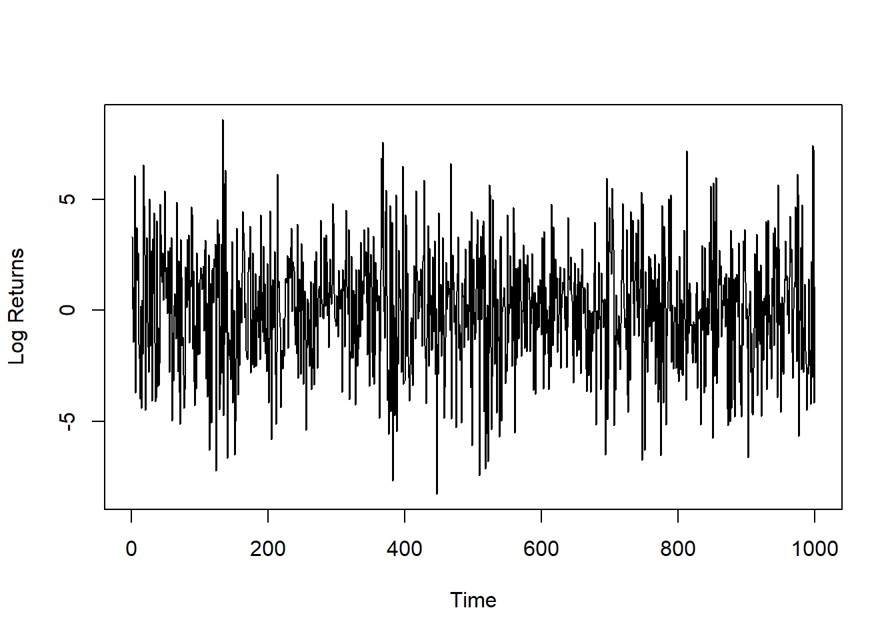

install.packages("Rcpp")11 Integration of C++ Code with Rcpp
11.1 Introduction
R is both a powerful interactive environment for data analysis, visualization, and modeling and an expressive programming language designed and built to support these tasks. However, sometimes R code just isn’t fast enough. Generally, performance that relates to speed is improved by C++.
11.2 Rcpp
Rcpp is an R add-on package which makes it very simple to connect R with C++. While still relatively new (2008) as a project, Rcpp has already become widely deployed among users and developers in the R community. Rcpp continues to be under active development, and extensions are being added. It is now the most popular language extension for the R system and used by over 2700 CRAN Packages. This is about 14% of all R packages on CRAN, and 60% of all packages that use compiled code.
11.3 R versus C++
One of the key differences between R and C++ is that R is interpreted and C++ is compiled.
With a compiled language, code you enter is reduced or ‘compiled’ into the ‘target language’ (that is, the actual instructions in machine code). Once the translation is complete, the executable code is either run or set aside to run later.
With interpreted languages, the code is saved in the same format that you entered and is reduced/compiled to machine-specific instructions at runtime.
The interpreted languages thus allow for more flexibility because a program can be adaptively modified and there is no need for an additional ‘compilation stage’.
The flexibility, however, comes at a cost; interpreted languages are significantly slower, since the compilation of the code happens every time it is run (think of loops).
Typical bottlenecks that C++ can address includes:
- Loops that can’t easily be vectorized because subsequent iterations depend on previous ones.
- Recursive functions, or problems which include calling functions many times. The overhead (resources required) of calling a function in C++ is much lower than that in R.
- Problems that require advanced data structures and algorithms that R doesn’t provide. C++ has efficient implementations of many advanced data structures that R does not provide, such as ordered maps or double-ended queues.
11.4 Basic C++ in R
In the following, we will consider how to write basic C++ code by converting simple R functions to their C++ equivalents.
All examples need version 0.10.1 or above of the Rcpp package. This version includes the functions cppFunction() and sourceCpp(), which make it very easy to connect C++ to R.
Install the latest version of Rcpp from CRAN with:
You’ll also need a working compiler:
- On Windows, install ‘Rtools’
- On Mac, install ‘Xcode’ from the app store and some other things need to be sorted.
11.5 C++ functions in R
cppFunction() allows you to write C++ functions in R:
suppressMessages(library(Rcpp))
#> Warning: pakke 'Rcpp' blev bygget under R version 4.3.3
cppFunction('
int add(int x, int y, int z) {
int sum = x + y + z;
return sum;
}')When you run this code, Rcpp will compile the C++ code and construct an R function that connects to the compiled C++ function. You can then run the function in R:
add(1, 2, 3)
#> [1] 6The following will teach you the basics of C++ by translating simple R functions to their C++ equivalents.
11.5.1 Example: No inputs, scalar output
We will start with a very simple function that takes no arguments and always returns the integer 1:
oneR <- function() 1L # R function
cppFunction('
int oneCpp() { # C++ function
return 1,
}')The syntax to create a function in C++ looks like the syntax to call a function in R.
You must declare the type of output the function returns before the function name; this function returns an int (a scalar integer).
You must use an explicit return statement to return a value from a function (which is not necessary in R).
Every statement is terminated by a semicolon, ;.
11.6 Variables declation
A main difference between R and C++ is the declaration of variables. In R, we that that we can write commands like:
iN <- 5
dK <- 0.156532
bJ <- TRUE
sT <- "Hello World"Differently in C++, we need to specify the class of the variable before its definition:
int iN = 5; // integer
double dK = 0.156352; // double
bool bJ = true; // boolean
string st = "Hello World"; // stringAlso note that the logical value TRUE is indicated as true (same for FALSE).
Comments are indicated with // instead of #;
The arrows that we use to assign values to variables in R do not make sense in C++.
11.6.1 Example: scalar input, scalar output
signR <- function(iX) {
if (iX > 0) {
1
} else if (iX == 0) {
0
} else {
-1
}
}
cppFunction('int SignC(int x) {
if (x > 0) {
return 1;
} else if (x == 0) {
return 0;
} else {
return -1;
}
}')From the example above, it can be noted that it is needed to declare the function in the same way as the output. The if-statement syntax in C++ is identical to that in R. C++ also has a while-loop that works in the same way as R’s.
11.7 For loops in C++
One of the main reasons for including C++ code in our R program is to speed up the evaluation of loops. Indeed, there are situations where, unfortunately, we cannot avoid making a loop, e.g., when subsequent iterations depend on previous ones.
For loops in C++ have a different syntax than those in R:
for (int i = 0 (init); i < 10 (check); i++ (increment)) {
// some code here
}Note that we declare the class of the loop index i (this has to be an integer), we indicate the start (i = 0), the end (i < 10) and the increment at each iteration (i++).
The notation i++ indicates that the variable i needs to be augmented by 1 at each iteration. The notation i-- indicates that the value of i needs to be decreased by 1 at each iteration.
11.7.1 Example: vector input, scalar output
sumR <- function(vX) {
dTotal <- 0
for (i in 1:length(vX)) {
dTotal <- dTotal + vX[i]
}
return(dTotal)
}
cppFunction('
double sumC(NumericVector x) {
int n = x.size();
double total = 0;
for(int i = 0; i < n; i++) {
total += x(i);
}
return total;
}')The classes for the most common types of R vectors are: NumericVector, IntegerVector, CharacterVector, and LogicalVector.
To find the length of the vector, we use the .size() method, which returns an integer. In general, C++ methods are called with ‘.’.
C++ is zero based! The first element of a vector is indexed at 0 and not at 1.
The call total += x(i) is equivalent to total = total + x(i). Similar operators are -=, *=, /=.
Loops are not at all as slow compared to vectorized programs in C++ as in R, so it is fine to use loops in C++. In R, on the other hand, we always want to use vector operations when possible, because looping is just too slow in comparison.
11.7.2 Efficiency of loops: C++ vs. R
The above example is a situation where C++ is much more efficient than R:
suppressMessages(library(microbenchmark))
#> Warning: pakke 'microbenchmark' blev bygget under R version 4.3.3
vX <- runif(1e4)
microbenchmark(
sum(vX),
sumC(vX),
sumR(vX)
)
#> Unit: microseconds
#> expr min lq mean median uq max neval
#> sum(vX) 7.4 7.6 7.997 7.70 8.10 14.1 100
#> sumC(vX) 21.8 22.1 32.729 22.45 24.25 801.0 100
#> sumR(vX) 253.3 256.3 290.191 257.80 261.55 2424.4 100The sumC function even come somewhat close to beating the built-in (and highly optimized) R function sum(), while sumR() is significantly slower.
11.7.3 Example: vector input, vector output
Next, we’ll create a function that computes the Euclidean distance between a value and a vector of values:
pdistR <- function(dX, vY) {
sqrt((dX - vY) ^ 2)
}
cppFunction('
NumericVector pdistC(double x, NumericVector y) {
int n = y.size();
NumericVector out(n);
for (int i = 0; i < n; i++) {
out(i) = sqrt(pow(y(i) - x, 2.0));
}
return out;
}')We create a new numeric vector of length n with a constructor: NumericVector out(n). Another useful way of makin a vector is to copy an existing one: NumericVector zs = close(ys).
C++ uses the pow() and not ^ for exponentation.
Even though an R function might be fully vectorized, a C++ function can stil be faster. However, it also takes longer to write the C++ function.
Other useful math functions in C++: min(), max(), abs(), sin(), cos(), tan(), exp(). log(), ceil(), floor(), round()…
11.7.4 Example: matrix input, vector output
Consider the C++ function that reproduces rowSums():
cppFunction('
NumericVector rowSumsC(NumericMatrix x) {
int nrow = x.nrow(), ncol = x.ncol();
NumericVector out(nrow);
for (int i = 0; i < nrow; i++) {
double total = 0;
for (int j = 0; j < ncol; j++) {
total += x(i, j);
}
out(i) = total;
}
return out;
}')Calling it, we get:
Each vector type has a matrix equivalent: NumericMatrix, IntegerMatrix, Charactermatrix, and LogicalMatrix.
In C++, you subset a matrix with () and not [].
Use .nrow() and .ncol() methods to get the dimensions of a matrix.
11.8 Using sourceCpp
So far, we have used inline C++ with cppFunction. This makes presentation simpler, but for real problems it is usually easier to use stand-alone C++ files and then source them into R using sourceCpp().
Your stand-alone C++ files should have extension .cpp and needs to start with:
#include <Rcpp.h>
using namespace Rcpp;
And for each function that you want available within R, you need to prefix it with:
// [[Rcpp::export]]
You can embed R code in special C++ comment blocks, which is really convenient if you want to run some test code. The blocks look as follows:
/*** R
# This is R code
*/To compile the C++ code, use sourceCpp("path/to/file.cpp"). This will create the matching R functions and add them to your current session.
Note that these C++ functions cannot be saved in a .Rdata file and be reloaded in a later sesions; they muse be recreated/recompiled each time you restart R.
As an example, running sourceCpp() on the following file implements mean in C++ and then compares it to the built-in R function mean().
#include <Rcpp.h>
using namespace Rcpp;
// [[Rcpp::export]]
double meanC(NumericVector x) {
int n = x.size();
double total = 0;
for (int i = 0; i < n; i++) {
total += x(i);
}
return total / n;
}
/*** R
suppressMessages(library(microbenchmark))
vX <- runif(1e5)
microbenchmark(mean(vX), meanC(vX))
*/sourceCpp("CppSource.cpp")
#>
#> > suppressMessages(library(microbenchmark))
#>
#> > vX <- runif(1e+05)
#>
#> > microbenchmark(mean(vX), meanC(vX))
#> Unit: microseconds
#> expr min lq mean median uq max neval
#> mean(vX) 152.3 154.35 160.467 156.15 161.75 227.2 100
#> meanC(vX) 221.0 223.25 235.814 224.60 226.60 1013.8 100
suppressMessages(library(microbenchmark))
vX <- runif(1e5)
microbenchmark(
mean(vX),
meanC(vX)
)
#> Unit: microseconds
#> expr min lq mean median uq max neval
#> mean(vX) 152.2 155.00 172.800 158.45 171.95 436.0 100
#> meanC(vX) 221.1 224.25 242.466 225.95 234.90 608.6 10011.9 The Fibonacci sequence
Consider the problem of computing the Fibonacci sequence. The Fibonacci numbers \(F_n\) are defined as a recursive sum of the two preceding terms in the same sequence:
\[ F_n = F_{n-1} + F_{n-2} \]
with initial conditions \(F_0 = 0\) and \(F_1 = 1\). For example, the first ten numbers of the sequence \(F_0\) to \(F_9\) are seen to be:
\[ 0, 1, 1, 2, 3, 5, 8, 13, 21, 34 \]
11.9.1 Fibonacci in R
Using recursive programming, we can compute the Fibonacci numbers in R:
This simple function has several key features:
- It is very short.
- It does not test for wrong input values less than zero.
- It is easy to comprehenad.
- It is a very faithful execution of the relationship \(F_n = F_{n-1} + F_{n-2}\).
However, it is very insufficient; it can be shown that the algorithm is exponential in \(n\) - or in other words, its run-time increases at an exponential rate relative to the argument \(n\).
11.9.2 Fibonacci in C++
A simple solution to compute \(F_n\) much faster using the same simple and intuitive algorithm is to switch to C++. We can write a simple C++ script which contains a function for the Fibonacci number evaluation:
#include <Rcpp.h>
using namespace Rcpp;
// [[Rcpp::export]]
int fibC(int x) {
if (x == 0) return(0);
if (x == 1) return(1);
return(fibC(x - 1) + fibC(x - 2));
}11.9.3 Comparing fibR and fibC
To load the functions inside fibonacci.cpp which we want to export (those with // [[Rcpp::export]]), we simply run:
suppressMessages(library(Rcpp))
sourceCpp("fibonacci.cpp")
fibC(25)
#> [1] 75025Comparing the two functions:
suppressMessages(library(microbenchmark))
microbenchmark(fibR(25), fibC(25))
#> Unit: microseconds
#> expr min lq mean median uq max neval
#> fibR(25) 91158.3 93283.2 95861.965 94086.75 95356.65 140411.3 100
#> fibC(25) 119.2 121.3 155.378 133.45 153.70 1697.3 10011.10 Vector, Matrices and Linear Algebra in C++
C++ does not come with routines that implement linear algebra like in R. However, similar to R, we can include external libraries. One of the most used libraries for matrix calculus in C++ is armadillo. In order to link R with C++ code which exploits armadillo, we can use the RcppArmadillo package for R.
Install the RcppArmadillo package from CRAN:
install.packages("RcppArmadillo")Features of RcppArmadillo include:
- Better vector and matrix types;
arma::vec,arma::mat. - Very fast routines for linear algebra operations, e.g., matrix multiplication, matrix inversion, linear system solving etc.
https://arma.sourceforge.net/docs.html: documentation for all Armadillo functions. Great descriptions, examples, and links to related functions.
11.10.1 Example
The following code is saved in the file armadilloexample.cpp:
// [[Rcpp::depends(RcppArmadillo)]]
#include <RcppArmadillo.h>
using namespace Rcpp;
// [[Rcpp:export]]
arma::mat matprodC(arma::mat m1, arma::mat m2) {
if(m1.n_cols != m2.n_rows)
stop("Incompatible matrix dimensions");
return m1 * m2;
}And then used in R:
suppressMessages(library(RcppArmadillo))
#> Warning: pakke 'RcppArmadillo' blev bygget under R version 4.3.3
sourceCpp("armadilloexample.cpp")
m1 <- matrix(1:9, 3, 3)
m2 <- matrix(1:9, 3, 3)
matprodC(m1, m2)
#> [,1] [,2] [,3]
#> [1,] 30 66 102
#> [2,] 36 81 126
#> [3,] 42 96 150
m1 %*% m2
#> [,1] [,2] [,3]
#> [1,] 30 66 102
#> [2,] 36 81 126
#> [3,] 42 96 15011.11 Inverse of Matrix Product
Consider the R function:
This function performs a matrix multiplication between mX and mY, and then returns the inverse of the product.
Consider now the C++ implementation exploiting the RcppArmadillo package:
// [[Rcpp:depends(RcppArmadillo)]]
#include <RcppArmadillo.h>
using namespace arma;
using namespace Rcpp;
// [[Rcpp::export]]
mat FunC(mat mx, mat mY) {
mat mZ = mx * mY;
mat mZInv = mZ.i();
return mZInv;
}Comparison:
suppressMessages(library(RcppArmadillo))
sourceCpp("mycfunction.cpp")
M <- 300
mX <- matrix(rnorm(M^2), M)
mY <- matrix(rnorm(M^2), M)
microbenchmark(FunR(mX, mY), FunC(mX, mY))
#> Unit: milliseconds
#> expr min lq mean median uq max neval
#> FunR(mX, mY) 35.571 36.1687 36.73813 36.44685 36.74690 42.2427 100
#> FunC(mX, mY) 28.627 29.0529 29.69111 29.66330 29.97065 34.9298 10011.12 Calling R Functions from C++
It is very easy to load C++ functions in R using sourceCpp(). Using Rcpp, it is possible to load R functions inside C++ functions. See: https://gallery.rcpp.org/articles/r-function-from-c++/.
Rcpp permits easy access to native R objects at the C++ level. Calling an R function in C++ can be very useful. For example to pick up parameter initializations, maybe to access a custom data summary that would be tedious to recode, or maybe even calling a plotting routine.
Define in R the following function which returns the sum of squares of a vector:
Consider now the following C++ code:
#include <Rcpp.h>
using namespace Rcpp;
// [[Rcpp::export]]
SEXP callRFunction(NumericVector vX, Function f) {
SEXP res = f(vX);
return res;
}Note the SEXP class for R objects in C++ and the Function class for general functions in C++. The code can be saved in a script callRFunction.cpp in the working directory and be loaded with the sourceCpp function as usual.
After running:
sourceCpp("callRFunction.cpp")We have the callRFunction available in R. Run:
callRFunction(vX, SumOfSquaresR)
#> [1] 15.98534
SumOfSquaresR(vX)
#> [1] 15.98534Define now the function sum of absolute values:
We can use the same function callRFunction to execute SumOfAbsoluteValuesR in C++ as:
callRFunction(vX, SumOfAbsoluteValuesR)
#> [1] 10.25095
SumOfAbsoluteValuesR(vX)
#> [1] 10.25095That is, callRFunction(NumericVector vX, Function f) is independent from the definition of f.
11.12.1 Warning
suppressMessages(library(microbenchmark))
vX <- rnorm(1e6)
microbenchmark(
callRFunction(vX, SumOfSquaresR),
SumOfSquaresR(vX)
)
#> Unit: milliseconds
#> expr min lq mean median uq
#> callRFunction(vX, SumOfSquaresR) 2.1440 2.28475 3.276364 2.35835 2.90405
#> SumOfSquaresR(vX) 2.0895 2.25540 2.979320 2.36685 2.65355
#> max neval
#> 6.9373 100
#> 6.4855 100Calling R functions in C++ is slower than calling R functions in R.
11.13 The Rcpp Family
Rcpp and RcppArmadillo are not the only two packages that belong to the Rcpp family. There also exist:
- The RcppGSL package provides an easy-to-use interface between data structures from the GNU Scientific Library (
https://www.gnu.org/software/gsl/). - The RcppEigen package provides an interface to the Eigen library with linear algebra: matrices, vectors, numerical solvers, and related algorithms.
- RcppNumerical: Rcpp integration for numerical computing libraries, including e.g., numerical integration, optimization.
And a bunch more…
11.14 A simple model for daily financial returns
Consider the following conditional model for financial log-returns (GARCH(1,1)) \[ \begin{aligned} r_t &= \varepsilon_t, \quad \varepsilon_t \sim N(0, \sigma_t^2) \\ \sigma_t^2 &= \omega + \alpha \varepsilon_{t-1}^2 + \beta \sigma_{t-1}^2 \end{aligned} \] The conditional variance is \(\sigma_t^2\) and it can be shown that the unconditional variance, given stationarity, is given by \[ \text{Var}(r_t) = \frac{\omega}{1-\alpha-\beta} \] Condition for stationarity is \(\alpha + \beta < 1\). Conditions for positivity are \(\omega > 0\), \(\alpha > 0\) and \(\beta > 0\).
11.15 Estimation of the GARCH(1,1) model
Given the stationarity and positivity conditions on the process \(\sigma_t^2\), the average Gaussian log-likelihood function is defined as \[ \ell(\theta, r_t) = \frac{1}{T} \sum_{t=1}^{T} \log(f(r_t, \theta)) \] where \[ \begin{aligned} \log(f(r_t, \theta)) &= \log \left( \frac{1}{\sqrt{2\pi\sigma_t^2}} \exp \left( -\frac{r_t^2}{2\sigma_t^2} \right) \right) \\ &= -\frac{1}{2} \log(2\pi\sigma_t^2) - \frac{r_t^2}{2\sigma_t^2} \\ &\propto -\log(2\pi) - \log(\sigma_t^2) - \frac{\varepsilon_t^2}{\sigma_t^2} \end{aligned} \] so that \[ \hat{\theta} = \underset{\theta}{\text{arg max}} \, \ell(\theta, r_t) \]
11.15.1 GARCH practical issues
As evident from the likelihood formulation, the evaluation of the sequence of volatilities \(\sigma_1,...,\sigma_T\) is required for model estimation. Unfortunately, a for loop is required for this task. Also fors imulation from the GARCH(1,1) model, the computation of the aforementioned loop is required.
So let’s do it in C++.
11.16 Simulation of GARCH(1,1) in C++
// [[Rcpp::depends(RcppArmadillo)]]
#include <RcppArmadillo.h>
using namespace arma;
using namespace Rcpp;
// [[Rcpp::export]]
Rcpp::List GarchSim(int iT, double dOmega, double dAlpha, double dBeta) {
vec vY(iT); //observations
vec vSigma2(iT); // conditional variances
// initialize at the unconditional value
vSigma2(0) = dOmega/(1.0 - dAlpha - dBeta);
// sample the first observation
vY(0) = pow(vSigma2(0), 0.5) * Rf_rnorm(0.0, 1.0);
for (int t = 1; t < iT; t++) {
vSigma2(t) = dOmega + dAlpha * pow(vY(t - 1), 2.0) + dBeta * vSigma2(t - 1);
vY(t) = pow(vSigma2(t), 0.5) * Rf_rnorm(0.0, 1.0);
}
List lOut;
lOut["vSigma2"] = vSigma2;
lOut["vY"] = vY;
return lOut;
}Note:
- Vector declaration with
vec. - The use of
pow(double, double)for powers. - The function
Rf_rnorm(double, double)for simulation from a Gaussian distribution. - The list declaration.
- The list elements assignment.
Assuming the code is saved in the file SimGarch.cpp inside the working directory, a GARCH(1,1) process can be simulated by running:
sourceCpp("SimGarch.cpp")
iT <- 1000
dOmega <- 0.1
dAlpha <- 0.05
dBeta <- 0.94
lSim <- GarchSim(iT, dOmega, dAlpha, dBeta)
plot(1:1000, lSim[["vSigma2"]], type = "l", lty = 1, xlab = "Time", ylab = "Conditional variance")
plot(1:1000, lSim[["vY"]], type = "l", lty = 1, xlab = "Time", ylab = "Log Returns")